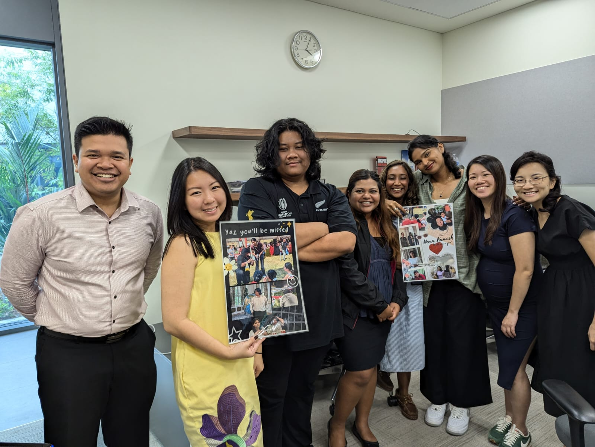
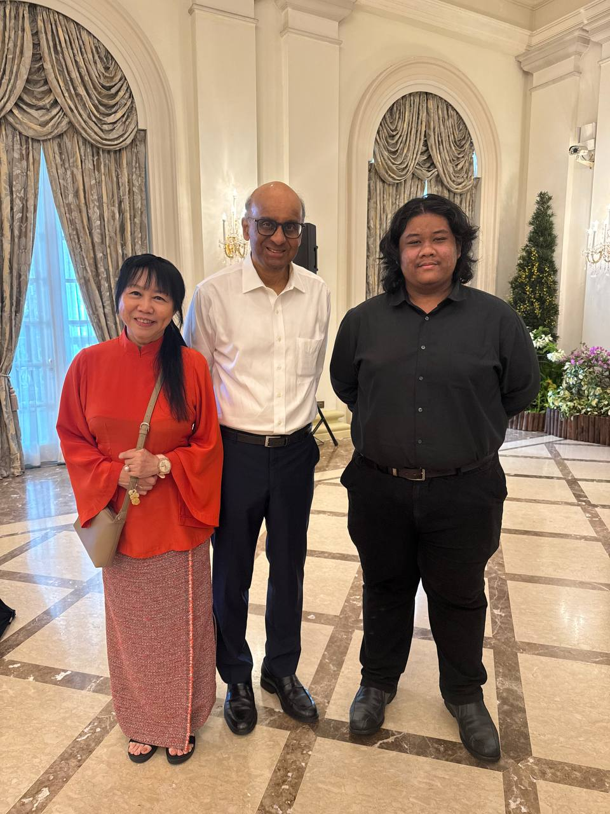
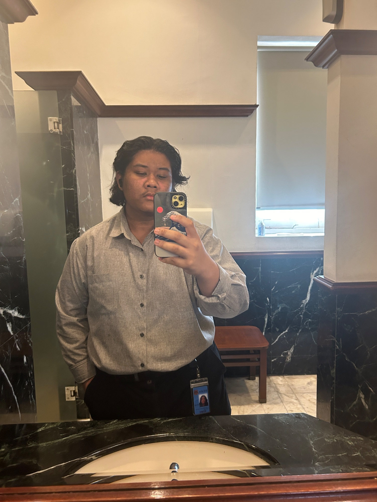
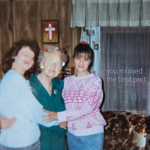

Portfolio
Multimedia storyteller · Writer · Creative.
Making work that moves people and leaves a mark.

On location — filming session
At the Istana, SingaporeWhat I do

About Ilyas
Mass Communications student at Republic Polytechnic with a passion for journalism, video production, and stories that actually matter.
I’m Ilyas — a storyteller driven by curiosity and a genuine belief that journalism can change how people see the world. I specialise in video production and reporting, crafting narratives that inform, engage, and stick.
I thrive in fast-paced environments, adapt quickly, and never stop learning — whether that means picking up a new skill, trying a different creative approach, or pushing through a tight deadline with something worth watching at the end.
My work is guided by a commitment to integrity and quality. Stories should matter. If they don’t, why tell them?
Portfolio
Everything I make — video productions, written pieces, photography, podcasts, and more.
Videos
Writing
Personal Blog
Unfiltered writing on life, work, culture, and whatever is occupying my mind.
Get in touch
I’m always open to interesting conversations, commissions, and collaborations — including editing work. Reach out directly through any of the channels below.
© 2025 Ilyas Muzaffar · Based in Singapore
